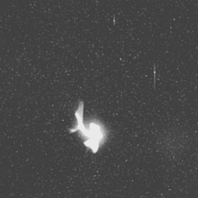
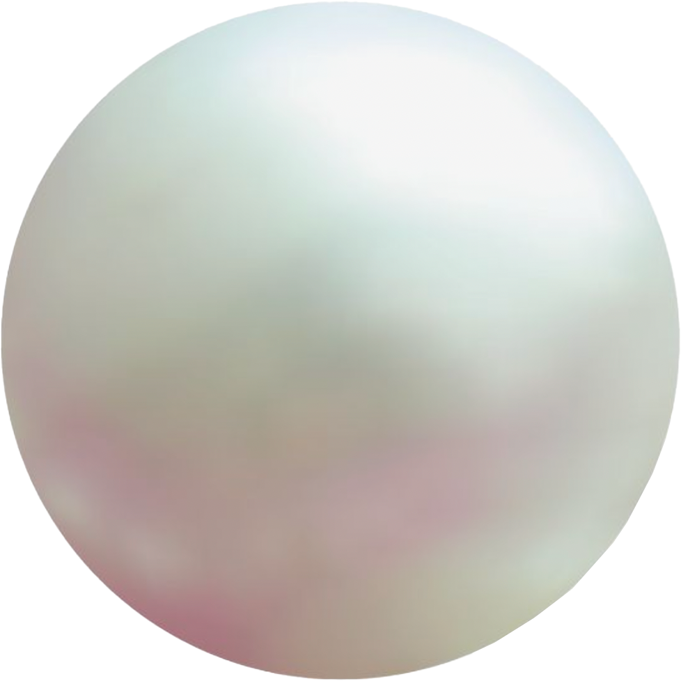
 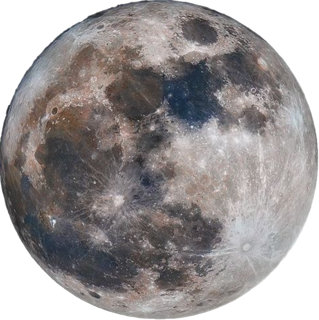
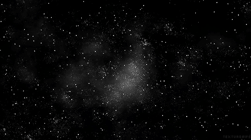
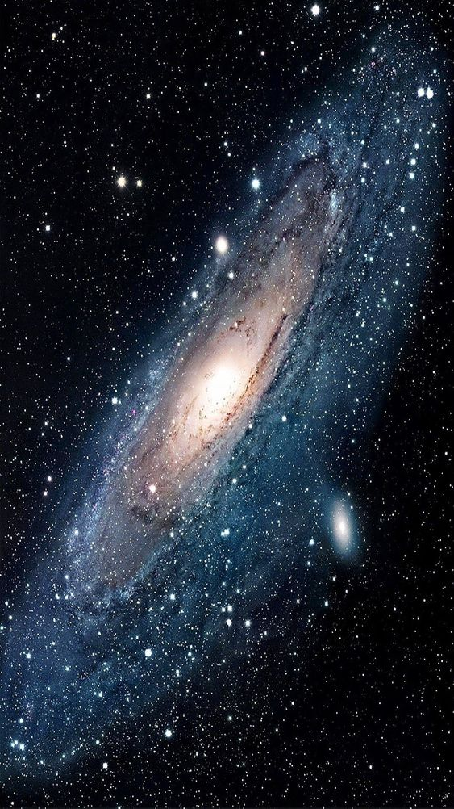
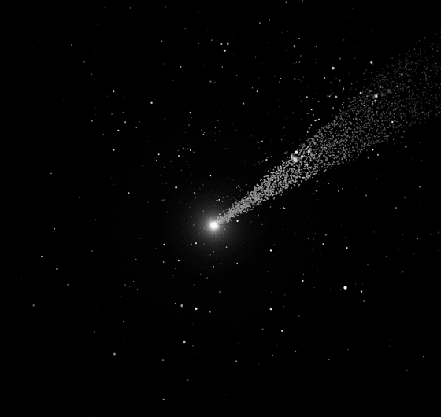
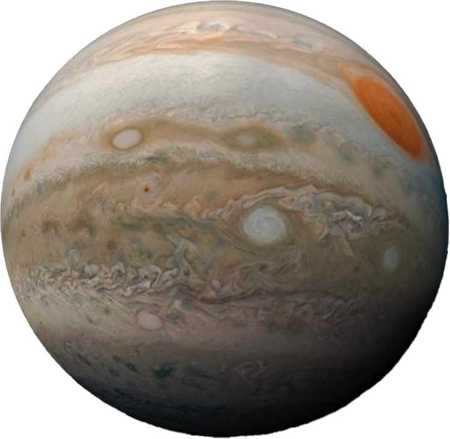
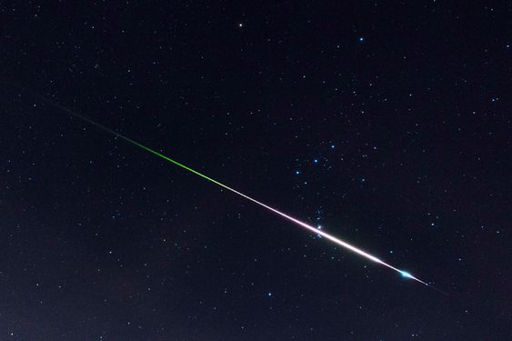
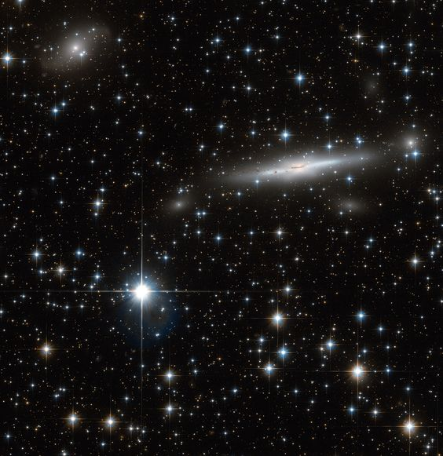
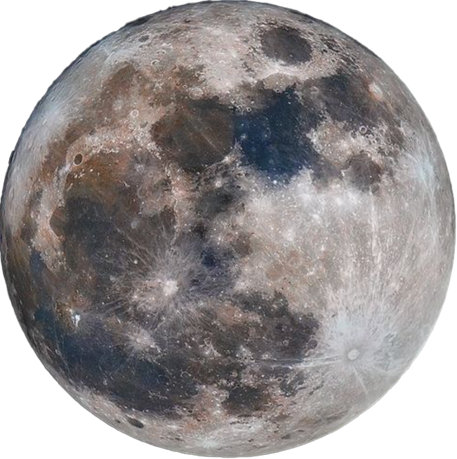
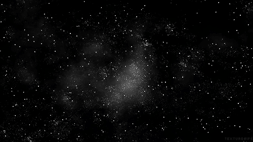
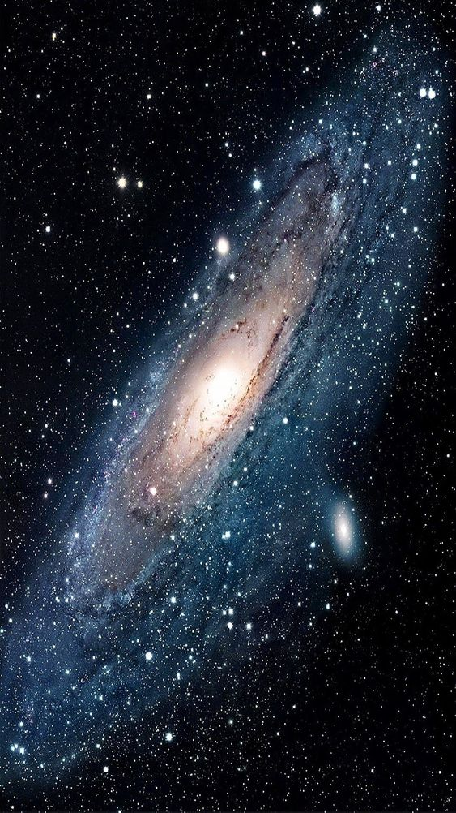
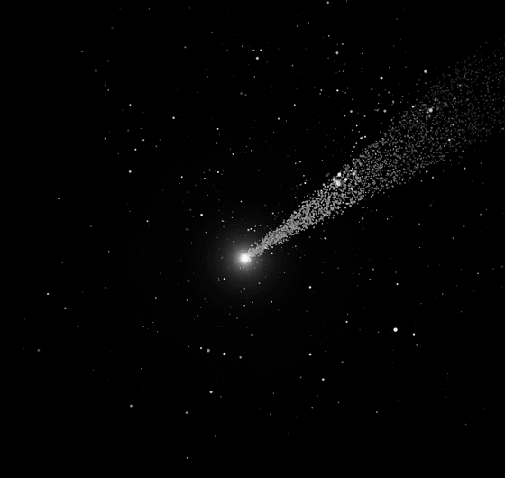
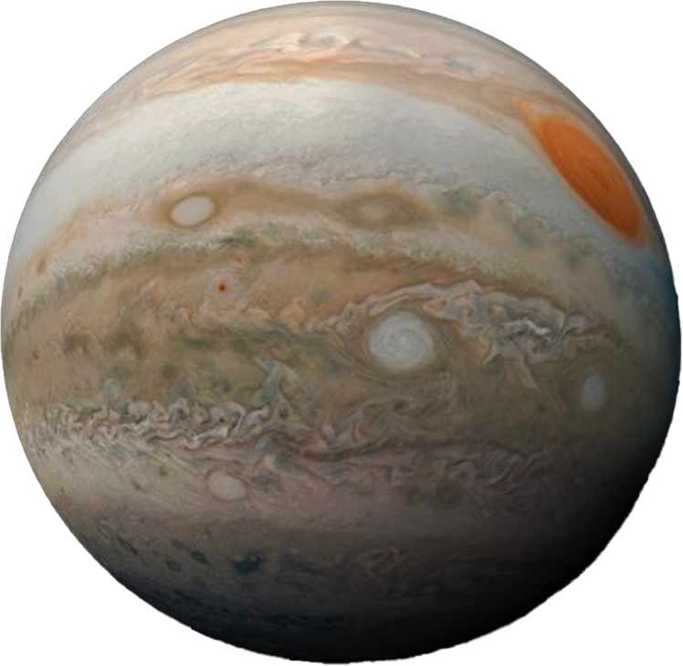
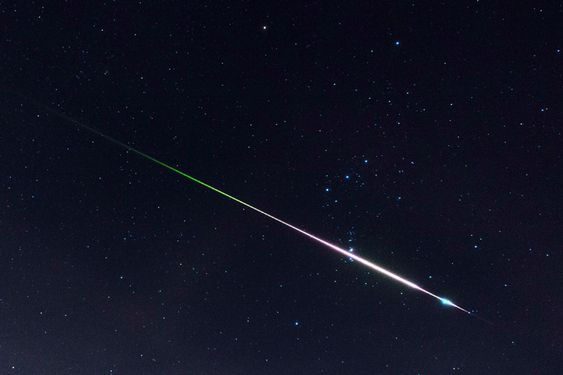
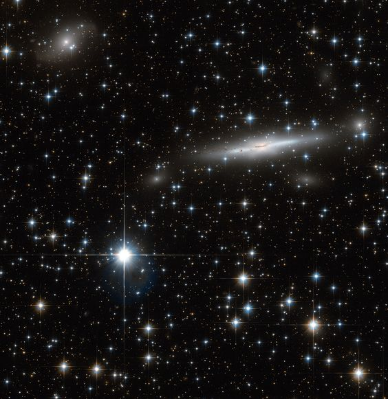
APOD: 2000 January 10 - Brown Sun Bubbling
Explanation: Our Sun may look like all soft and fluffy, but its not. Our Sun is an extremely large ball of bubbling hot gas, mostly hydrogen gas. The above picture was taken in a specific color of light emitted by hydrogen gas called Hydrogen-alpha. Granules cover the solar photosphere surface like shag carpet, interrupted by bright regions containing dark sunspots. Visible at the left edge is a solar prominence. Our Sun glows because it is hot, but it is not on fire. Fire is the rapid acquisition of oxygen, and there is very little oxygen on the Sun. The energy source of our Sun is the nuclear fusion of hydrogen into helium deep within its core. Astronomers are still working to understand, however, why so few neutrinos are measured from the Sun's core.
APOD: 2005 November 6 - A Sunspot Up Close
Explanation: Why would a small part of the Sun appear slightly dark? Visible above is a close-up picture of a sunspot, a depression on the Sun's face that is slightly cooler and less luminous than the rest of the Sun. The Sun's complex magnetic field creates this cool region by inhibiting hot material from entering the spot. Sunspots can be larger than the Earth and typically last for only a few days. This high-resolution picture also shows clearly that the Sun's face is a bubbling sea of separate cells of hot gas. These cells are known as granules. A solar granule is about 1000 kilometers across and lasts about 10 minutes. After that, many granules end up exploding.
APOD: 2004 April 7 - The Crown of the Sun
Explanation: During a total solar eclipse, the Sun's extensive outer atmosphere or corona is an awesome and inspirational sight. The subtle shades and shimmering features of the corona that engage the eye span a brightness range of over 10,000 to 1, making them notoriously difficult to capture in a single picture. But this composite of 33 digital images ranging in exposure time from 1/8000 to 1/5 second comes very close to revealing the crown of the Sun in all its glory. The telescopic views were recorded from Side, Turkey during the March 29 solar eclipse, a geocentric celestial event that was widely seen under nearly ideal conditions. The composite also captures a pinkish prominence extending just beyond the upper edge of the eclipsed sun.
APOD: 2004 September 12 - Mercury: A Cratered Inferno
Explanation: Mercury's surface looks similar to our Moon's. Each is heavily cratered and made of rock. Mercury's diameter is about 4800 km, while the Moon's is slightly less at about 3500 km (compared with about 12,700 km for the Earth). But Mercury is unique in many ways. Mercury is the closest planet to the Sun, orbiting at about 1/3 the radius of the Earth's orbit. As Mercury slowly rotates, its surface temperature varies from an unbearably cold -180 degrees Celsius to an unbearably hot 400 degrees Celsius. The place nearest the Sun in Mercury's orbit changes slightly each orbit - a fact used by Albert Einstein to help verify the correctness of his then newly discovered theory of gravity: General Relativity. The above picture was taken by the only spacecraft ever to pass Mercury: Mariner 10 in 1974. A new mission, Messenger, launched for Mercury last month and is scheduled to enter orbit around the Solar System's innermost planet in in 2011.
APOD: 2003 April 12 - Mercury on the Horizon
Explanation: Have you ever seen the planet Mercury? Because Mercury orbits so close to the Sun, it never wanders far from the Sun in Earth's sky. If trailing the Sun, Mercury will be visible low on the horizon for only a short while after sunset. If leading the Sun, Mercury will be visible only shortly before sunrise. So at certain times of the year an informed skygazer with a little determination can usually pick Mercury out from a site with an unobscured horizon. Above, a lot of determination has been combined with a little digital trickery to show Mercury's successive positions during March of 2000. Each picture was taken from the same location in Spain when the Sun itself was 10 degrees below the horizon and superposed on the single most photogenic sunset. By the middle of this month, Mercury will again be well placed for viewing above the western horizon at sunset, but by the end of April it will have faded and dropped into the twilight. On May 7th, Mercury will cross the Sun's disk.
APOD: 2003 February 16 - Southwest Mercury
Explanation: The planet Mercury resembles a moon. Mercury's old surface is heavily cratered like many moons. Mercury is larger than most moons but smaller than Jupiter's moon Ganymede and Saturn's moon Titan. Mercury is much denser and more massive than any moon, though, because it is made mostly of iron. In fact, the Earth is the only planet more dense. A visitor to Mercury's surface would see some strange sights. Because Mercury rotates exactly three times every two orbits around the Sun, and because Mercury's orbit is so elliptical, a visitor to Mercury might see the Sun rise, stop in the sky, go back toward the rising horizon, stop again, and then set quickly over the other horizon. >From Earth, Mercury's proximity to the Sun causes it to be visible only for a short time just after sunset or just before sunrise.
APOD: 2004 May 16 - Venus: Earth's Cloudy Twin
Explanation: This picture by the Galileo spacecraft shows just how cloudy Venus is. Venus is very similar to Earth in size and mass - and so is sometimes referred to as Earth's sister planet - but Venus has a quite different climate. Venus' thick clouds and closeness to the Sun (only Mercury is closer) make it the hottest planet - much hotter than the Earth. Humans could not survive there, and no life of any sort has ever been found. When Venus is visible it is usually the brightest object in the sky after the Sun and the Moon. More than 20 spacecraft have visited Venus including Venera 9, which landed on the surface, and Magellan, which used radar to peer through the clouds and make a map of the surface. This visible light picture of Venus was taken by the Galileo spacecraft that orbited Jupiter from 1995 to 2003. Many things about Venus remain unknown, including the cause of mysterious bursts of radio waves.
APOD: 2003 May 14 - The North Pole of Venus
Explanation: If you could look down on the North Pole of Venus what would you see? The Magellan probe that orbited Venus from 1990 to 1994 was able to peer through the thick Venusian clouds and build up the above image by emitting and re-detecting cloud-penetrating radar. Visible as the bright patch below central North is Venus' highest mountain Maxwell Montes. Other notable features include numerous mountains, coronas, impact craters, tessera, ridges, and lava flows. Although the size and mass of Venus are similar to the Earth, its thick carbon-dioxide atmosphere has trapped heat so efficiently that surface temperature usually exceeds 700 kelvins, hot enough to melt lead.
APOD: 2003 November 30 - A Venus Landing
Explanation: This image is part of the first color panoramic view from Venus. A TV camera on the Soviet Venera 13 lander that parachuted to the surface on 1982 March 1 transmitted it. Venus' clouds are composed of sulfuric acid droplets while its surface temperature is about 482 degrees Celsius at an atmospheric pressure of 92 times that of sea-level on Earth. Despite these harsh conditions, the Venera 13 lander survived long enough to send back a series of images and perform an analysis of the Venusian soil. Part of the lander itself is visible in the lower right portion of the image. An earlier Soviet Venus lander, Venera 7 (1970), was the first spacecraft to return data from the surface of another planet.
APOD: 2005 January 2 - Welcome to Planet Earth
Explanation: Earth, the third planet from a star named the Sun. The Earth is shaped like a sphere and composed mostly of rock. Over 70 percent of the Earth's surface is water. The planet has a relatively thin atmosphere composed mostly of nitrogen and oxygen. Earth has a single large Moon that is about 1/4 of its diameter and, from the planet's surface, is seen to have almost exactly the same angular size as the Sun. With its abundance of liquid water, Earth supports a large variety of life forms, including potentially intelligent species such as dolphins and humans. Please enjoy your stay on Planet Earth.
APOD: 2004 August 22 - Earth at Night
Explanation: This is what the Earth looks like at night. Can you find your favorite country or city? Surprisingly, city lights make this task quite possible. Human-made lights highlight particularly developed or populated areas of the Earth's surface, including the seaboards of Europe, the eastern United States, and Japan. Many large cities are located near rivers or oceans so that they can exchange goods cheaply by boat. Particularly dark areas include the central parts of South America, Africa, Asia, and Australia. The above image is actually a composite of hundreds of pictures made by the orbiting DMSP satellites.
APOD: 1998 May 30 - Water World
Explanation: Water (Dihydrogen Oxide, H2O) is a truly remarkable chemical compound, fundamental to life on Earth. Earth is the only planet in the Solar System where the present surface temperature and pressure allow the three forms of water, solid (ice), liquid (ocean), and gas (water vapor condensing in clouds) to exist simultaneously. Water in one of these forms accounts for everything visible in this view of Earth from space looking north at the Bering Sea and the coast of Alaska, USA, around Bristol Bay.
APOD: 2005 November 13 - Lunation
Explanation: Our Moon's appearance changes nightly. This time-lapse sequence shows what our Moon looks like during a lunation, a complete lunar cycle. As the Moon orbits the Earth, the half illuminated by the Sun first becomes increasingly visible, then decreasingly visible. The Moon always keeps the same face toward the Earth. The Moon's apparent size changes slightly, though, and a slight wobble called a libration is discernable as it progresses along its elliptical orbit. During the cycle, sunlight reflects from the Moon at different angles, and so illuminates different features differently. A full lunation takes about 29.5 days, just under a month (moon-th).
APOD: 2003 May 22 - Eclipsed Moon Montage
Explanation: After watching this month's lunar eclipse, amateur astronomer Sebastien Gauthier carefully composed this montage of telescopic images of the Moon sliding through planet Earth's shadow. While the deepest part of the total eclipse corresponds to the central exposure, the play of light across the lunar surface nicely demonstrates that the planet's shadow is not uniformly dark as it extends into space. In fact, lunar maria and montes are still visible in the dimmed, reddened sunlight scattered into the cone-shaped shadow region, or umbra, by Earth's atmosphere. For this eclipse, the Moon's trajectory took it North of the umbra's darker core, seen here cast over the Moon's cratered southern highlands. Gauthier's telescope and camera equipment were set up near the Trois-Rivieres College Champlain Observatory in Quebec, Canada.
APOD: 1998 May 3 - Standing on the Moon
Explanation: Humans once walked on the Moon. Pictured above is the second person to stand on the lunar surface: Edwin "Buzz" Aldrin. During this Apollo 11 mission, Neil Armstrong (the first person to walk on the moon) and Buzz Aldrin landed on the Moon while Michael Collins circled in the Command Module above. The lunar team erected a plaque on the surface that reads: HERE MEN FROM THE PLANET EARTH FIRST SET FOOT UPON THE MOON JULY 1969 A.D. WE CAME IN PEACE FOR ALL MANKIND. The Apollo missions demonstrated that it is possible to land humans on the Moon and return them safely.
Tonight, a lucky few may see a meteor explode. Over the next 36 hours the Earth will pass unusually close to debris expelled from Comet Tempel-Tuttle, causing many sand-sized particles from this comet to enter and burn up in the Earth's atmosphere. This yearly phenomenon is known as the Leonids Meteor Shower, but the location the Earth passes through this year holds promise to provide particularly high activity. The 1998 Leonids was noteworthy for its many bright meteors. In the above slow-loading sequence, a 1998 Leonid was caught exploding over Los Alamos, New Mexico. In the last one-minute exposure, another Leonid streaks past. If tonight is clear, just grab a lawn chair and a warm jacket, go outside, and LOOK UP!